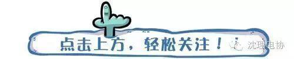
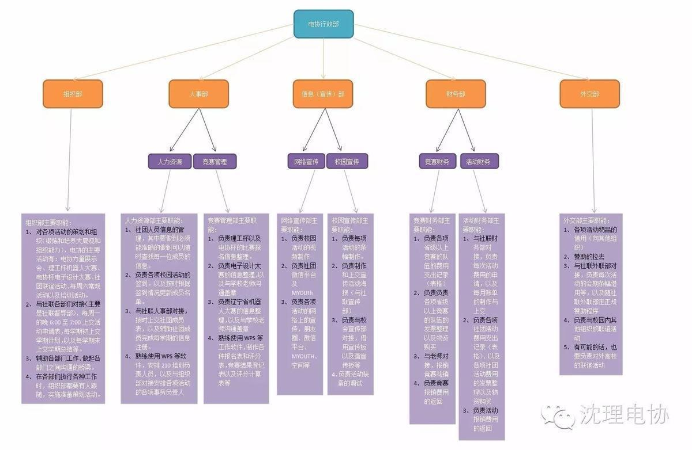

电协干事竞选指南

又到了一年一度的“农忙”时节，尤其是参加本届机器人比赛的大一新生们倍感辛苦。下面就听来一听大家近期的心声把！
新手A：啥也不会，就让做个小车，怎么做的出来啊？
新手B：怎么这么难啊？这个焊点老出问题，我连这都做不好，看来还是算了吧，我压根就不是干这个的料……
菜鸟Z：这不就是这么连的么，怎么不对啊，烦死了。。
菜鸟E：程序到底怎么写啊，我才大一，能写出程序么？
学酥A：现在这么忙，马上期末了，我还啥都不会，学习也没学好，电协里也没学到啥，小车还是算了吧？
学酥B：听说程序学长能给，我到时候就修改一下就可以了吧。
~~C：学长培训讲的压根就听不懂，简直了。
~~D：算了吧，那么多人参赛，奖就那么几个，还得天天去做，咱们组谁也不会，还是放弃把，免得最后两头空。
……
以上的字眼，相信在这些日子里多少都有点闪过了大家的脑子。小编没有具体的去收藏某某某的谈话记录，完全是脑补出来的。在这里提出来是想和大家在这里理清一些观念。 |

下面进入正题，给即将竞选电协干事的童鞋指明一下电协分工（收好不谢啦……@_@）：


在最后的，希望大家通过这次比赛获得好成绩，电协加油！！！